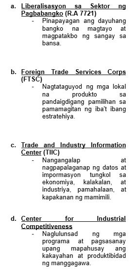

KALAKALANG PANLABAS
Palitan ng produkto at serbisyo sa pagitan ng mga bansa
Ito ay nagaganap sapagkat walang bansa ang maaaring makatugon sa lahat ng kanyang pangangailangan ng walang tulong mula sa ibang bansa.
EKSPORT (Pagluluwas): pagpapadala ng mga produkto at serbisyo sa ibang bansa
IMPORT (Pag-aangkat): pagbili ng kalakal mula sa ibang bansa
DAHILAN NG KALAKALANG PANLABAS
- Pagkakaiba ng Teknolohiya
- Pagkakaiba sa Pinagkukunang Yaman
- Pagkakaiba sa Panlasa
- Pagkakaiba sa Halaga ng Produksyon
PATAKARANG UMAAPEKTO SA KALAKALANG PANLABAS
Taripa/Tariff
Buwis sa mga produktong inaangkat
Nagpapataas ng presyo at nagpapababa ng benta ng inaangkat ng produkto
Nagpapataw ng mataas na taripa pang mapigil ang pagpasok ng dayuhang produktong kalaban ng lokal na produkto
Kota: (Quota)
Maaaring limitahan (kotahan) ang pagpasok ng mga kalabang produkto
Subsidy
Tulong na ibinibigay ng gobyerno upang bumaba ang halaga ng produksyon ng mga lokal na produkto.
BATAYAN NG KALAKALANG PANLABAS (David Ricardo)
Absolute Advantage
Nakakalikha ng mas maraming bilang ng produkto gamit ang mas kaunting salik ng produksyon kumpara sa ibang bansa.
Comparative Advantage
Ang bansa ay magkakaroon ng espesyalisasyon sa paglikha ng kalakal.
Kapag kaya ng bansa gawin ang kalakal ng mas efficient kumpara sa ibang bansa.
KABUTIHAN NG PAKIKIPAGKALAKALAN
- Mas maraming produkto ang mapagpipilian sa pamilihan.
- Napapataas nito ang kalidad ng mga produkto na nabibili sa pamilihan
- Nagkakaroon ng pagkakaunawaan ang mamamayan ng bansang nakikipagkalakalan.
- Lumalawak ang pamilihan ng mga produkto sa bansa.
DI-KABUTIHAN NG PAKIKIPAGKALAKALAN
- Nagiging palaasa ang mga mamamayan sa produktong imported
- Hindi nalilinang ang pagkamalikhain ng mga mamamayan dahil umaasa na lamang sila sa mga produktong gawa sa ibang bansa
- Pagkawala ng sariling pagkakakilanlan bunga ng pagpasok ng dayuhang kultura sa lipunan
PROGRAMANG NAGTATAGUYOD SA KALAKALANG PANLABAS

SAMAHANG PANDAIGDIGANG PANG-EKONOMIKO
World Trade Organization
- Pinasinayaan at nabuo noong Enero 1, 1995
- Samahang namamahala sa pandaigdigang patakaran ng sistema ng kalakalan o global trading system sa pagitan ng mga kasaping estado o member states
Layunin
- Pagsusulong ng maayos na kalakalan sa pamamagitan ng pagpapababa ng hadlang sa kalakalan (trade barriers)
- Plataporma para sa negosasyon at tulong-teknikal sa developing countries.
- Paggamit ng trade sanction sa mga kasaping hindi sumusunod sa desisyon ng samahan
Asia-Pacific Economic Council (APEC)
- Isulong ang kaunlarang pang-ekonomiya at katiwasayan sa rehiyong Asia-Pacific
- Itinatag noong Nobyembre 1989.
Layunin
- Liberalisasyon ng pakikipagkalakalan at pamumuhunan
- Pagpapabilis at pagpapadali ng pagnenegosyo
- Pagtutulungang pang-ekonomiya at teknikal
Association of Southeast Asian Nations (ASEAN)
- Paunlarin at isulong ang malayang kalakalan sa bawat kasapi ng ASEAN pati ang mga bansang dialogue partner nito.
- Itinatag noong August 8, 1967
Layunin
- Upang maging ganap ito, nabuo ang ASEAN Free Trade Area (AFTA) noong January 28, 1992, sa Singapore.
- Nakabatay sa Common Effective Preferential Tariff (CEPT) na nag-aalis ng taripa at quota para sa mas malayang daloy ng produkto sa ASEAN.